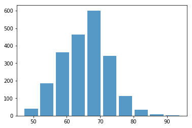

Step 4: 데이터 전처리하기
워크숍 리소스
이전 스텝을 통해 데이터셋을 불러왔습니다. 실제 상황에서는 각 축구 선수는 특정한 포지션을 가지고 있으며, 각 포지션마다 필요한 능력치가 다릅니다. 그래서 우리는 이제 분석 범위를 스트라이커(ST)로 좁혀보겠습니다.
먼저, 모든 포지션을 나열해 봅시다. 명령어가 조금 길긴 합니다. 하지만 잘 따라해주세요. fifa_data['Position']은 fifa_data의 포지션 열을 선택하고, dropna()는 빈 셀을 제거하며, unique()는 모든 중복 항목을 제거해 줍니다.
# 포지션이 몇 개인지 확인하기
print(fifa_data['Position'].dropna().unique())
출력 결과는 다음과 같습니다:
['RF' 'ST' 'LW' 'GK' 'RCM' 'LF' 'RS' 'RCB' 'LCM' 'CB' 'LDM' 'CAM' 'CDM'
'LS' 'LCB' 'RM' 'LAM' 'LM' 'LB' 'RDM' 'RW' 'CM' 'RB' 'RAM' 'CF' 'RWB'
'LWB']
이제 “ST” 포지션을 기준으로 데이터를 필터링 해보겠습니다. 여러분은 다른 포지션을 선택해서 차이를 확인해 보길 권장합니다.
# 포지션이 'ST'인 선수 필터링
fifa_data_by_pos = fifa_data[fifa_data['Position']=='ST']
다음으로, 모든 스트라이커의 종합 능력치에 대한 히스토그램을 그려봅시다.
# 모든 스트라이커의 종합 능력치 히스토그램 그리기
plt.hist(x=fifa_data_by_pos[target], bins=10, alpha=0.75, rwidth=0.85)
히스토그램 출력 결과는 다음과 같습니다:
(array([ 40., 186., 363., 463., 601., 341., 113., 34., 9., 2.]),
array([47. , 51.7, 56.4, 61.1, 65.8, 70.5, 75.2, 79.9, 84.6, 89.3, 94. ]),
<a list of 10 Patch objects>)

다음으로, 데이터를 두 개의 세트로 나누고자 합니다. 하나는 모델을 훈련하는 데 사용할 테스트용이고, 다른 하나는 훈련된 모델이 좋은지 검증하는 데 사용할 훈련용입니다.
여러분은 모델을 더 잘 훈련하기 위해 가능한 많은 데이터를 훈련용 데이터에 남겨야 한다고 생각할 수도 있습니다. 그렇게 한다면 훈련 데이터는 모델에 아주 적합해질 것입니다. 하지만 주의할 점은 그렇게 한다면 모델을 테스트 데이터에 적용할 때는 예측 정확도가 낮아질 수 있습니다. 이를 과적합(overfitting) 이라고 부릅니다.
따라서 25%의 데이터만 테스트용으로 남기겠습니다.
# 데이터를 훈련용 데이터와 테스트용 데이터로 무작위로 나누기
# test_size 비율을 변경하여 어떤 결과가 나오는지 확인해 보세요
train_data, test_data = train_test_split(fifa_data_by_pos,test_size=0.25)
# 훈련용 데이터와 테스트용 데이터에 포함된 선수 수 출력
# len()은 숫자 형식으로 선수 수를 반환하고,
# str()은 숫자를 문자열로 변환합니다
print("The # of training data is " + str(len(train_data)))
print("The # of testing data is " + str(len(test_data)))
출력 결과:
The # of training data is 1614
The # of testing data is 538